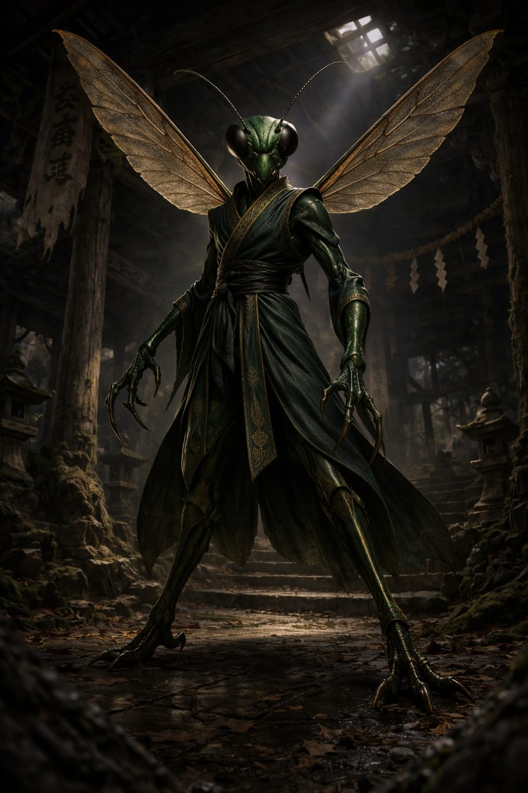

Emerald Jewel Wasp
Ampulex compressa
Region: South and Southeast Asia
Habitat: Tropical forests, humid lowlands and warm vegetated environments
Martial Representation: Dim Mak
The Emerald Jewel Wasp embodies surgical precision, nerve-targeting aggression and cold tactical control. Fast, calculating and unnervingly deliberate, it does not rely on brute force, but on striking exactly where the body fails. In combat, it thrives through accuracy, timing and devastating attacks aimed at critical points.
Martial Discipline Overview
Dim Mak is represented in WAFT as a precision-based striking discipline focused on anatomical vulnerability, timing and targeted damage to critical areas. It rewards technical mastery, calm execution and exact placement over wide, wasteful offense. Within WAFT, it enhances technique, agility and lethal precision.
Combat Attributes
Combat Abilities
Passive Ability
Parasitic Control
After landing 3 consecutive hits, the opponent cannot use Concentration or Special Attack, and has a 50% chance to attack themselves for 1 turn.
Missing an attack resets the chain.
Special Attack
Nervous Disruption
An attack that uses Technique as its Precision stat.
On hit, the opponent will strike themselves on their next turn, and cannot use Concentration or Special Attack.
Ultimate Charge: Offensive (3 hits)